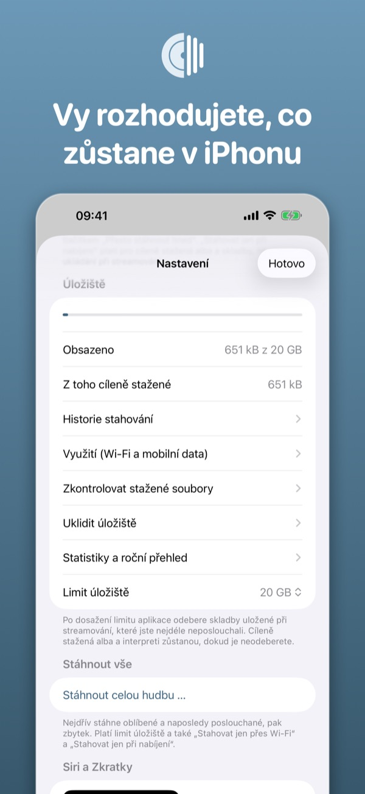
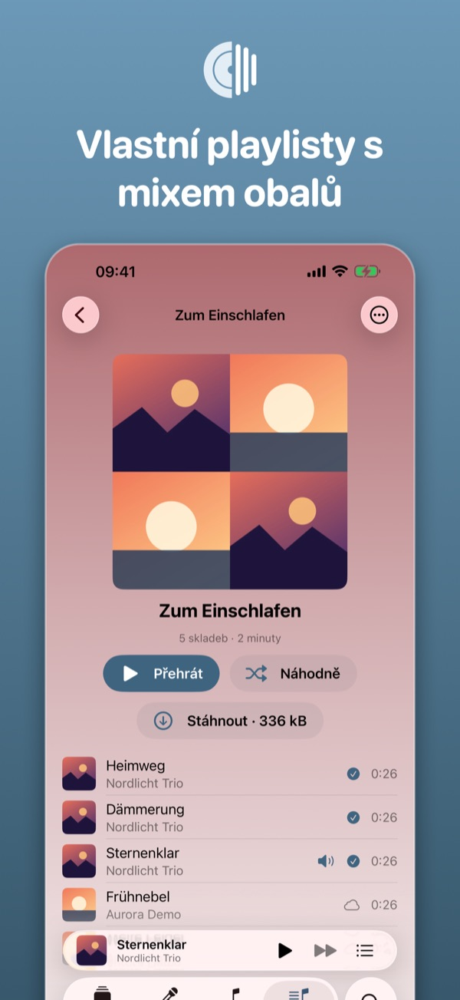
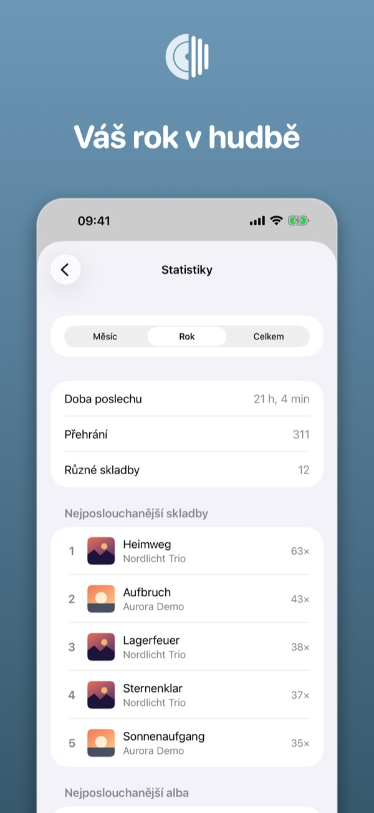
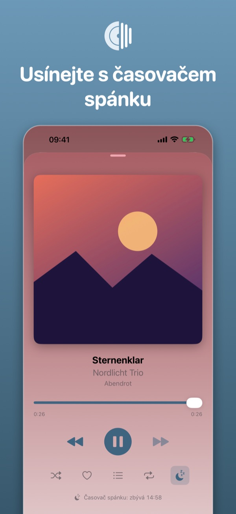
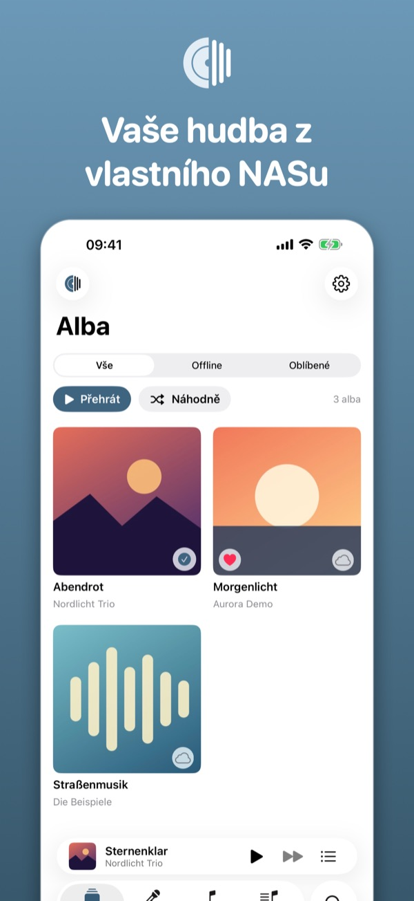
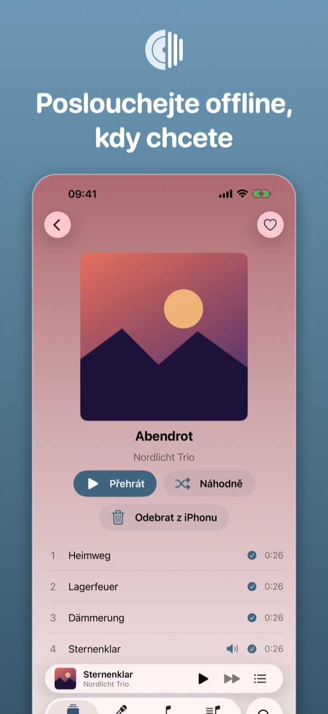
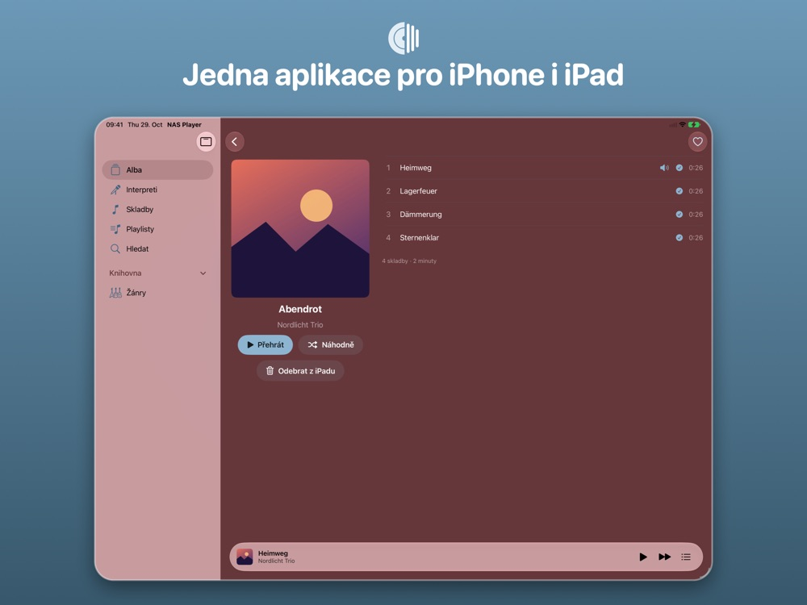
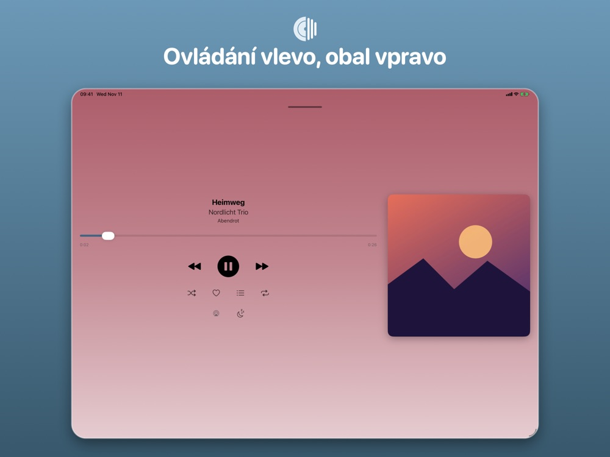
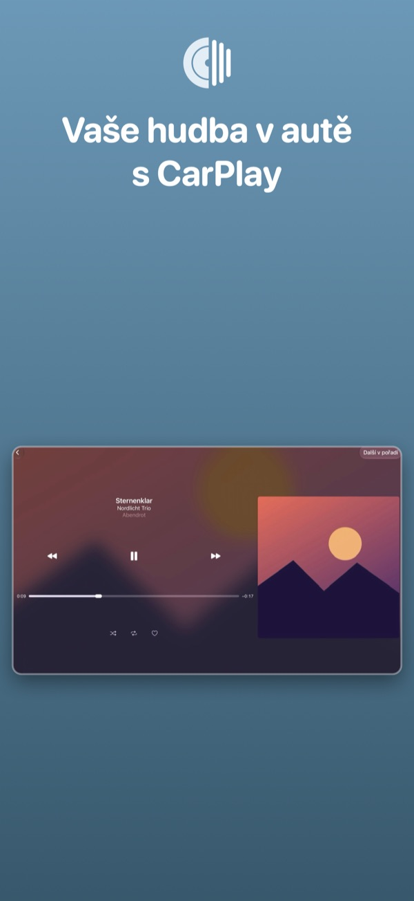

IPHONE
Celá knihovna v kapse
Přehled alb, stahování offline, úložiště, playlisty, statistiky a časovač spánku na iPhonu.




Přehrává hudbu z vašeho Synology NASu (Audio Station) na iPhonu a iPadu: streamování, poslech offline, CarPlay a Siri. Zdarma, bez reklam a sledování.
 Zdarma · bez nákupů v aplikaci
Zdarma · bez nákupů v aplikaci


Na iPhonu, na iPadu a v autě: stejná knihovna, stejné oblíbené, stejná hudba.
Přehled alb, stahování offline, úložiště, playlisty, statistiky a časovač spánku na iPhonu.




Jedna aplikace pro iPhone i iPad: boční panel, dvousloupcová stránka alba a přehrávač s ovládáním vlevo a obalem vpravo.


Domů, knihovnu, playlisty a žánry vybíráte přímo v autě.

Doma aplikace NAS najde sama. Na cestách použijte adresu https nebo QuickConnect.
Alba a interprety stahujte cíleně do zařízení. Stahování běží i na pozadí.
Doma, na cestách nebo bez sítě: stažená hudba hraje všude, zbytek se streamuje z NASu. V autě vybíráte pomocí CarPlay přímo na displeji.
Synology NAS s Audio Station dostupný na adrese https s platným certifikátem nebo přes QuickConnect. Bez NASu můžete aplikaci vyzkoušet v ukázkovém režimu.